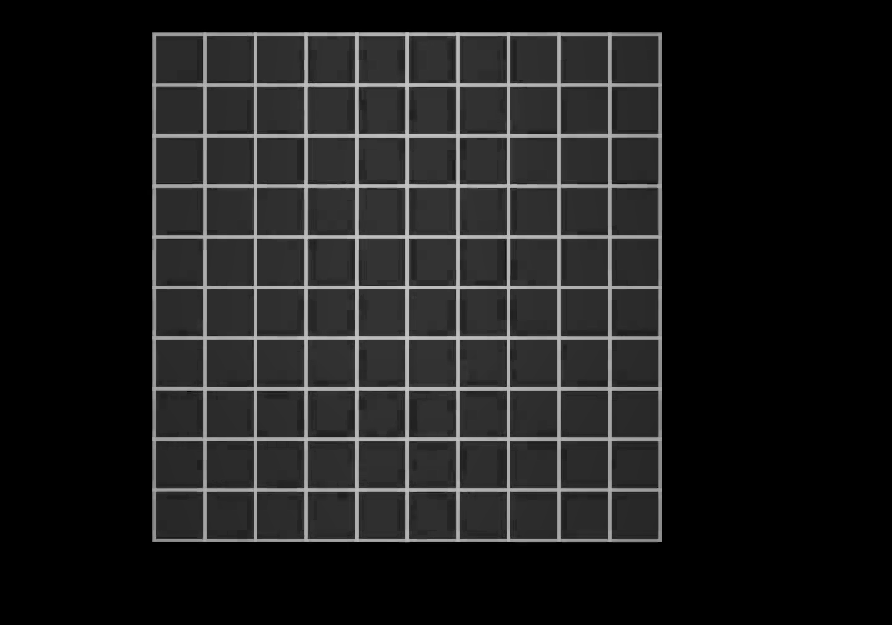
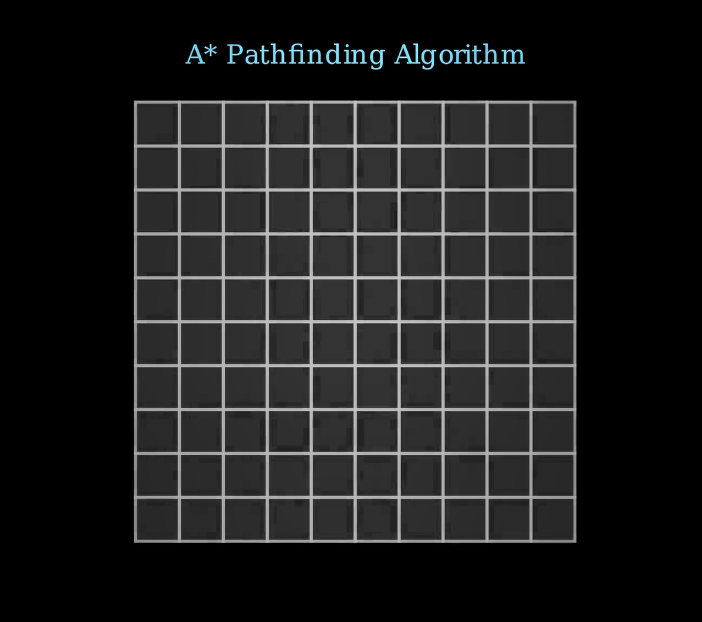
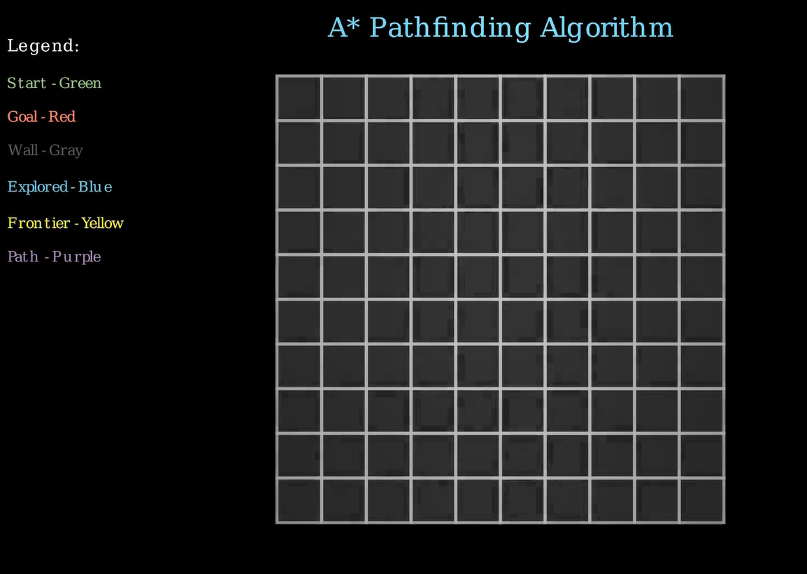
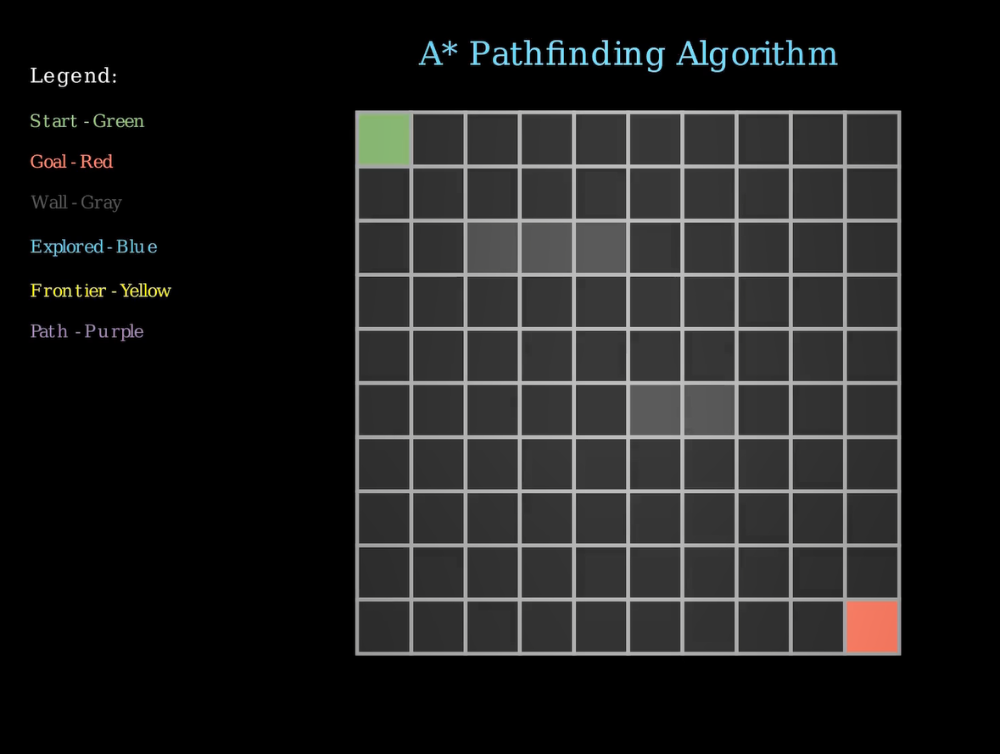
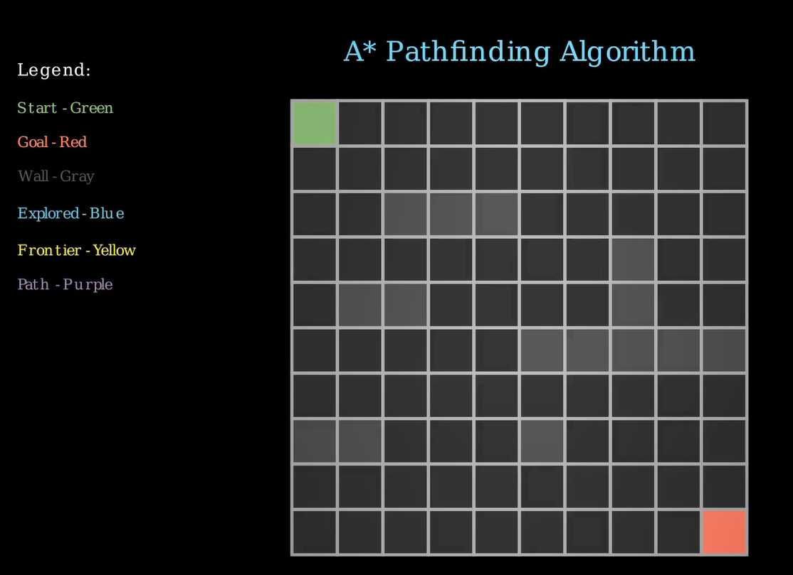
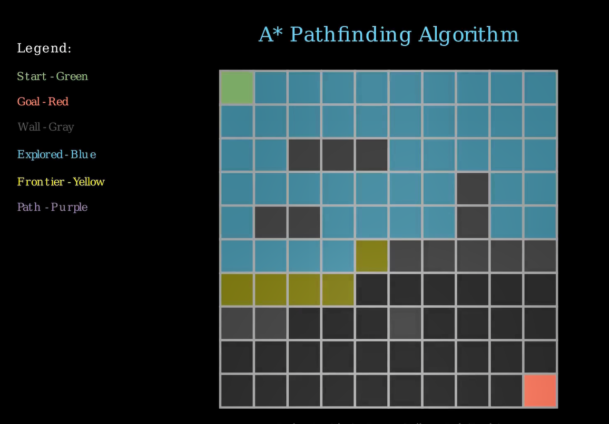
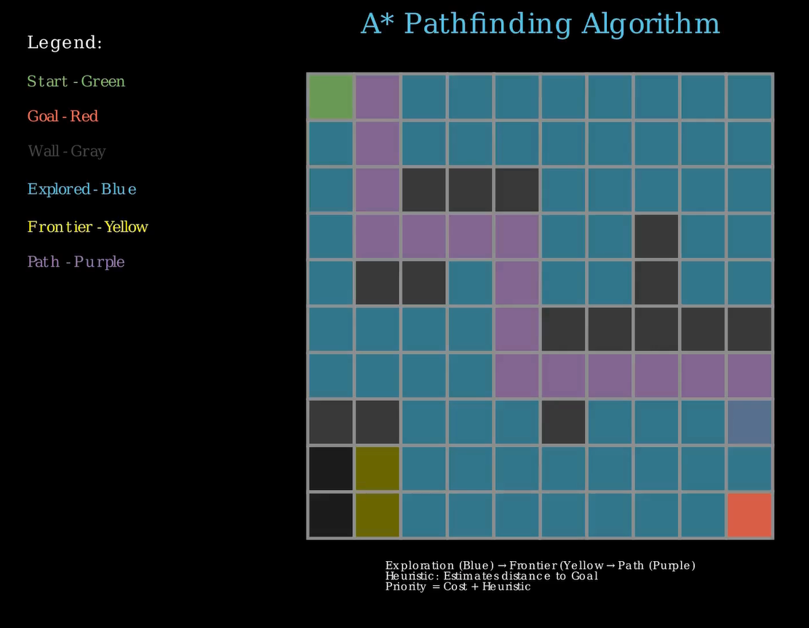
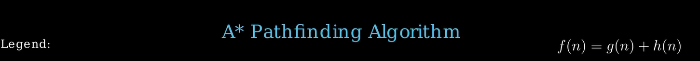
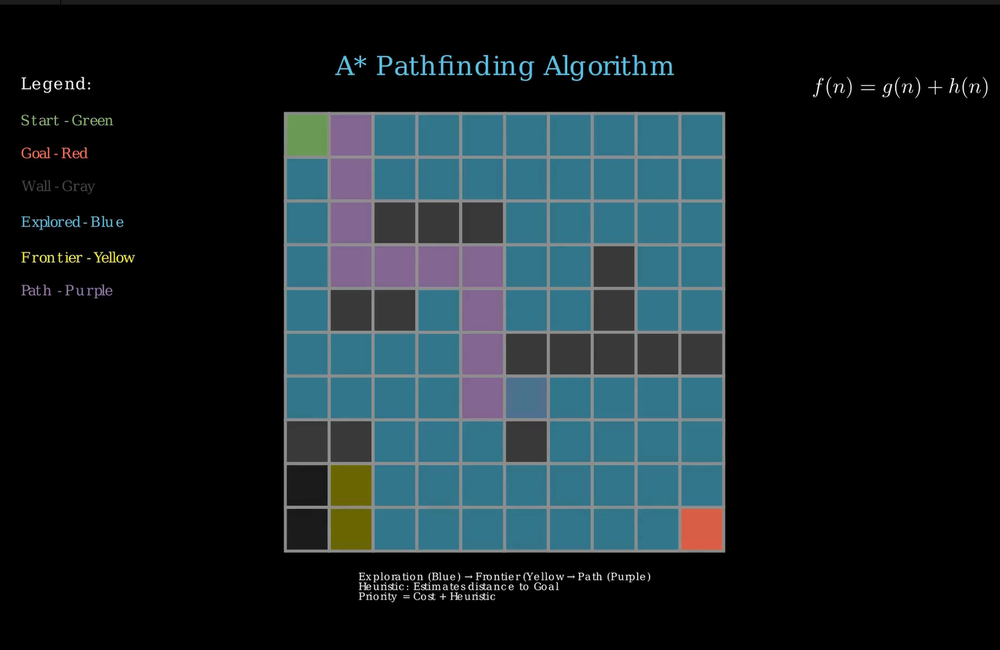

title: “A Pathfinding Visualization” format: revealjs: output-file: “index.html” theme: simple —
A Pathfinding Visualization
A pathfinding algorithm is a computational method used to determine the optimal route or path between two points within a given space, often represented as a graph or grid. These algorithms are fundamental in computer science and artificial intelligence, enabling machines and software to navigate complex environments efficiently. Pathfinding is integral to a wide range of applications, including robotics (for autonomous movement), video game development (guiding characters or units), network routing (finding the best data transfer routes), and GPS navigation systems (suggesting shortest or fastest driving paths).
The relevance of pathfinding algorithms stems from their ability to solve real-world problems that involve spatial reasoning, resource management, and decision-making. Popular algorithms like Dijkstra’s, A, and Breadth-First Search each offer different trade-offs in terms of speed, memory usage, and optimality of the path found. For instance, A is widely used in games and robotics due to its efficiency and ability to incorporate heuristics for faster computation.
Pathfinding algorithms are essential tools that empower various technologies to perform intelligent navigation and planning. Their usage continues to expand as new challenges in automation, logistics, and artificial intelligence emerge, making them a key component of modern technological solutions.ert screenshot of initial empty grid here.
Imports: What and Why?
from manim import *
import numpy as np
import heapq** Purpose of Each Import:**
from manim import *Brings in all Manim classes/functions. Used to create and animate elements likeScene,Text,Square,VGroup, etc.import numpy as npNumPy is often used in numerical and geometric operations.import heapqEssential for the A* algorithm. It provides an efficient priority queue to always explore the lowest-cost path next.
Class and Scene Setup
class PathfindingVisualization(Scene):
def construct(self):
self.grid_size = 10
self.cell_size = 0.6
...Sceneis the base class for any animation in Manim.construct()is the function Manim automatically calls to build and render the scene.grid_sizeandcell_sizecontrol how large the grid is visually.self.COLORSdefines color coding for various cell states.

Creating the Title
def create_title(self):
title = Text("A* Pathfinding Algorithm", font_size=26, color=BLUE)
...- This code adds a title to the top of the screen, the font_size ensure the font of the title fits your desires. Change the values and see the difference.
- Uses Manim’s
Text()andFadeIn()to animate it. - Visually sets the tone and context for the viewer.  —
Adding a Color Legend
def add_legend(self):
legend = VGroup(...)- Helps users understand what each cell color represents.
- Uses
Text()objects arranged withVGroup()and placed in the top-left corner. - VGroup groups multiple Manim objects so you can animate or position them together.

Grid Construction
def create_grid(self):
self.grid = VGroup()
...- Loops through
grid_size × grid_sizeto create square cells. - Each cell is positioned using
move_to(). - The grid is stored as a dictionary to track each cell’s metadata.
mark_special_cells()highlights start and goal points.

Adding Obstacles
def add_obstacles(self):
obstacles = [(2,2), (2,3), (2,4), ...]- Hardcoded walls are added to specific cells.
- These are filled with dark gray color.
- Walls are untraversable for the algorithm.

Neighbor Detection
def get_neighbors(self, current):
neighbors = [...]- Retrieves up/down/left/right neighbors.
- Filters out-of-bounds or wall cells.
- Used by A* to expand from the current cell.
A* Heuristic Function
def heuristic(self, goal, next_cell):
return abs(goal[0] - next_cell[0]) + abs(goal[1] - next_cell[1])- Implements Manhattan distance.
- Estimates distance from current to goal.
- Encourages exploration closer to the target.
A* Pathfinding Core
def run_astar_algorithm(self):
frontier = []
heapq.heappush(frontier, (0, start))
...- Main logic for the algorithm.
- Uses a priority queue to explore low-cost paths first.
- Explored = blue, frontier = yellow.
- Live visual updates using
animate.set_fill().

Visualizing the Final Path
def visualize_path(self, came_from):
while current != self.start:
path.append(current)- Backtracks from goal to start using
came_frommap. - Colors the optimal path purple.
- Skips start/goal for visual clarity.

Showing the A* Formula
def show_astar_formula(self):
formula = MathTex(r"f(n) = g(n) + h(n)", ...)- Displays the A* cost function:
f(n) = g(n) + h(n). g(n)= cost so far,h(n)= estimated cost to goal.f(n)is the priority value.

Adding Summary Explanation
def add_explanation(self):
explanation = Text(...)Displays a small summary at the bottom.
Recaps what the colors mean:
- Blue = explored
- Yellow = frontier
- Purple = final path
Explains how priority is calculated.

Summary
- We used Manim to visually explain the A* algorithm.
- Each color/animation directly maps to algorithm state.
- Combined heapq, heuristics, and animations for clarity.